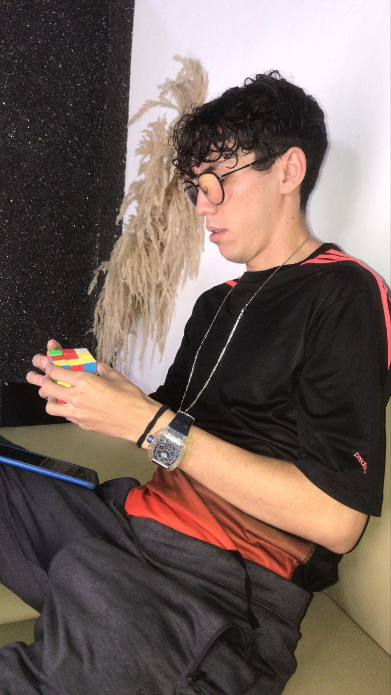

Soy estudiante de la UCV. Estudio medio tiempo diseño y desarrollo web, especializándome en tecnologías como Django y Laravel (PHP). Además soy técnico en software —con experiencia en PC, smartphones, tablets y laptops— y manejo tareas de mantenimiento y soporte. En mis tiempos libres escribo poesía libre y exploro proyectos personales de diseño.
Si necesitan comunicarse conmigo me pueden escribir a: dannygonzalez.exe@gmail.com